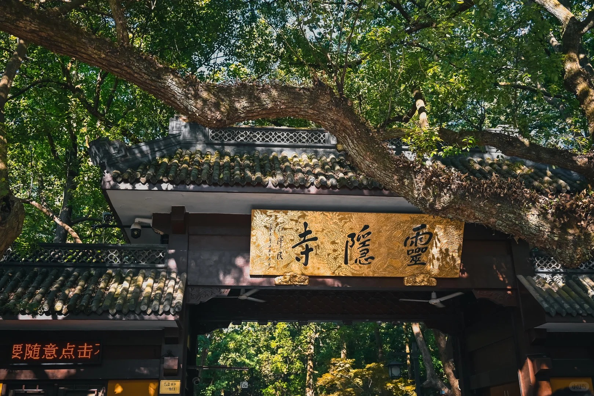
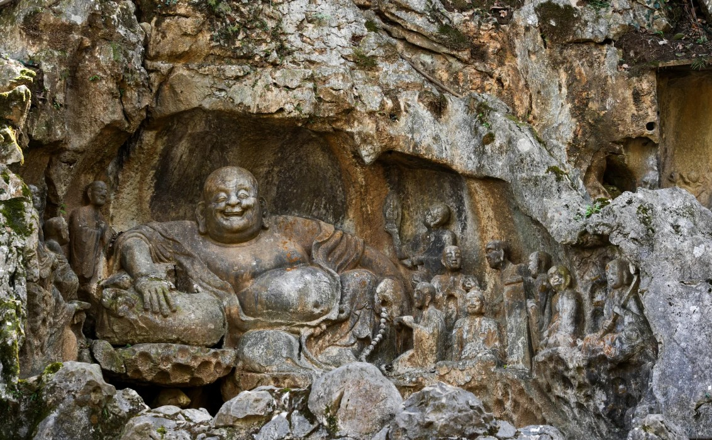
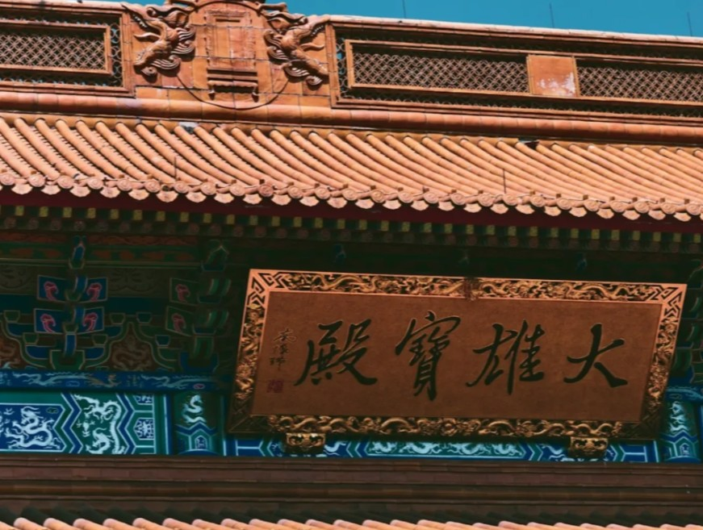
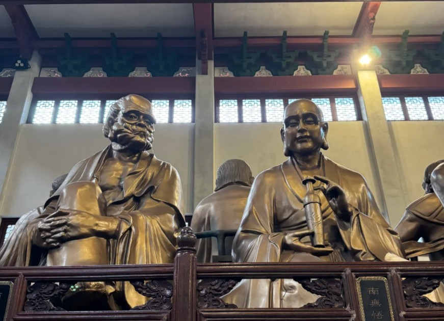

江南禅宗五山之首 | 国家4A级景区 | 杭州历史最悠久的千年古刹

灵隐寺坐落于杭州西湖西侧灵隐山麓，背靠北高峰、面朝飞来峰，又称云林禅寺，是江南禅宗五山之首、杭州历史最悠久的千年古刹。
始建：东晋咸和元年（公元 326 年），距今约 1700 年；
开山祖师：印度高僧慧理和尚；
名称由来：慧理见飞来峰酷似天竺灵鹫山，感慨 "仙灵所隐"，定名灵隐；清康熙南巡御题 "云林禅寺"，后世仍习惯称灵隐寺；
整体景区：由飞来峰摩崖石刻与灵隐寺院两部分组成，是西湖世界文化景观重要组成。
东晋初创：慧理开山建寺，初建规模简易；
五代鼎盛：吴越王钱镠大规模扩建，全盛时九楼十八阁、七十二殿堂，僧众三千余人；
唐宋兴盛：白居易、苏轼等文人常游，帝王多次拨款修缮；
明清沿革：屡遭损毁又反复重建，康熙赐 "云林禅寺" 匾额；
当代修缮：历经多次整修，现为国内知名佛教道场，占地面积约 8.7 万平方米。



济公传说：灵隐最知名文化符号，相传济公在此扶危济困、疯癫度人；
诗词文赋：白居易、苏轼、陆游、杨万里等数百位文人留下咏灵隐诗文；
艺术瑰宝：飞来峰石刻融合中印佛教造像风格，是江南石窟艺术代表；
禅宗圣地：作为江南禅宗五山之首，对中国佛教发展影响深远。
交通方式：乘7、Y2、103、121路至灵隐站；节假日建议公交或景区接驳车，停车位紧张。
游览贴士：入寺可免费领取三支清香，殿内禁止拍照；穿着得体，勿穿短裤短裙；建议游览时间2-3小时。
周边推荐：可一并游览永福寺、韬光寺，感受灵隐景区整体氛围。